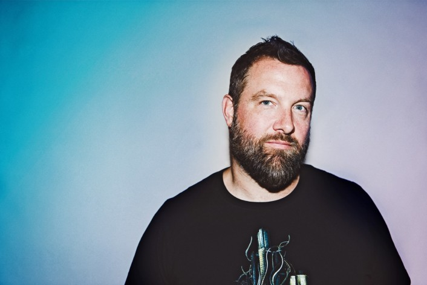

These Sets and Playlist Will Have You Headbobbbing For Hours
PREMIERE | Gryffin Brings The Summer Vibes On Uplifting New 'Flight Log 006' Mix

Ahhh the day has come for a fresh new "Flight Log 006" mix from none other than Gryffin. This time the TSIS favorite is coming hot off the release of his upflifting, summary new single “Tie Me Down” alongside Elley Duke and unveils the excellent sixth installment of his impressive TSIS x Flight Log series. Gryffin captures a warm, radiant vibe on this nearly hourlong mix highlighting some of our favorite recent releases including Gryffin’s new “Tie Me Down,” as well as some amazing recently songs from Kasbo, Louis The Child, Hayden James, San Holo, Rufus Du Sol, ZHU and many more. He expertly finds a laid-back, uplifting vibe throughout as the perfect new addition to his amazing track record of Flight Log mixes. Be sure to catch Gryffin at his Splash House and Outside Land performances this weekend and stay tuned for some news next Monday as he’s been teasing a BIG announcement. See tracklist below and enjoy!
Flight Log 006 tracklist Gryffin, Elley Duhé - Tie Me Down Kasbo - Lay It On Me (Feat. Keiynan Lonsdale) Whethan - Good Nights (Feat. Mascolo) Zhu, Tame Impala - My Life Louis The Child - Better Not (Feat. Wafia) Hayden James - Just Friends (Feat. Boy Matthews) CHVRCHES - Clearest Blue (Gryffin Remix) MØ, Diplo - Sun In Our Eyes Halsey - Alone (CID Remix) Flight Facilities - I Didn't Believe (Special Features Remix) RÜFÜS DU SOL - No Place Moby x Virtual Self - Natural Voices (Gryffin Edit) The Temper Trap - Sweet Disposition (Midnight Kids Remix) Snakehips & MØ - Don't Leave (Gryffin Remix) Slow Magic - Wildfire (Mielo Remix) Dwilly - ADD (Cudos Remix) Gryffin - Just For A Moment (Feat. Iselin) Illenium - Fractures (Feat. Nevve) (Trivecta Remix) San Holo - lift me ground the ground (Feat. Sofie Winterson) Said The Sky - Affection (Feat. Origami & Jack Newsome) Unknown Brain - Perfect 10 (Feat. Heather Sommer) Outro
Barclay Crenshaw Puts Forth Spacey New Bass Mix “Transmission 003”
With Claude VonStroke being pretty busy over the past few months, it’s no surprise that we haven’t heard much from his spacey bass music alter ego, Barclay Crenshaw. The last we heard from Barclay, he had just dropped very dope remix of Bon Iver. Yesterday he dropped off a brand new 30-minute mix, “Transmission 003,” which also happens to be an AMF Music Festival exclusive. If you’ve heard any of Barclay Crenshaw’s mixes, you can expect more of the same of his otherworldly bass music, mixed in with an assortment of hip-hop. Included in this “transmission” is music from BROCKHAMPTON, Mad Zach, Tinyghost, and much more. Barclay will be one of many dope artists who will be playing AMF Music Festival. He’ll be alongside RL Grime, M.I.A., Jamie xx, and plenty more. Check out more information regarding AMF Music Festival here, and listen to Barclay’s brand new mix below. Enjoy!
PREMIERE | Dirtybird Boss Claude VonStroke Shares Exclusive Mix For Shambhala 2018
One of our favorite music festivals north of the border, Shambhala, is now just right around the corner. In less than two weeks (from August 10-13), some of the best artists from all realms of electronic music will gather at the infamous Salmo Silver Ranch in the West Kootenay region of Southern British Columbia, Canada. Among the many different styles of dance music that will be present at Shambhala, a few members of the Dirtybird crew will be present to add their eccentric energy to the party. Dirtybird is bringing along some of their best artists to Shambhala: Claude VonStroke, Justin Martin, Christian Martin, Fisher, and Kyle Watson. To get a taste of what kind of beats these guys will be laying down at the Pagoda stage, check out this brand new, Shambhala exclusive mix that was crafted by none other than the Dirtybird label head, Claude VonStroke. The mix is brief but bangin’, featuring tunes from some of the label’s best like Walker & Royce, Steve Darko, Will Clarke, and more. Listen to Claude’s fiery mix below, and don’t forget to snag tickets to Shambhala as soon as you can. Follow this link for more info there.
Steve Darko - Fried or Fertilized [DIRTYBIRD] Vangelis Kostoxenakis - Take your shirt off [DIRTYBIRD] Nasser Baker - Say Something [CIRCUS] Chris Lake, Walker & Royce - Dance With Me [BLACK BOOK] Fickry and Onix Sundiono - Atari [DIRTYBIRD] ??? C.H.A.Y. - Who’s That [DIRTYBIRD] Cajmere - Percolater (Will Clarke Remix) [RELIEF]